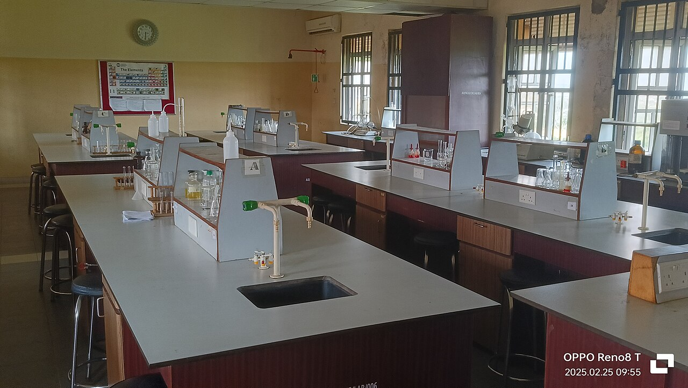

Water is een van de meest bijzondere stoffen op aarde. De scheikundige formule H2O betekent dat elk watermolecuul bestaat uit twee waterstofatomen en één zuurstofatoom.

Water heeft een kookpunt van 100 °C bij normale luchtdruk. Het is een goed oplosmiddel en komt voor in drie fasen: vast, vloeibaar en gas.
De beroemde vergelijking van Einstein koppelt massa en energie: E = mc2. In de scheikunde noteer je een reactie bijvoorbeeld zo: 2 H2 + O2 → 2 H2O.
In dit artikel wordt HTML gebruikt om de tekst op te maken. Meer over water lees je bij de KNCV.
share favorite download